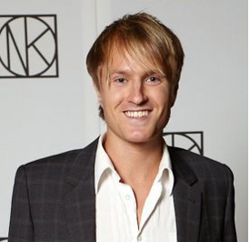

Business Development Manager | SaaS & Strategic Sourcing

Jag är en affärsdriven ledare som brinner för att bygga broar mellan komplex teknik, strategiskt inköp och hållbar tillväxt. Med en bakgrund inom både retail och SaaS-försäljning har jag utvecklat en unik förmåga: att se affären genom kundens (inköparens) ögon.
Redo för nästa steg? Kontakta mig gärna för att diskutera hur min mix av säljledarskap och inköpslogik kan bidra till er framgång. Skicka ett mail!